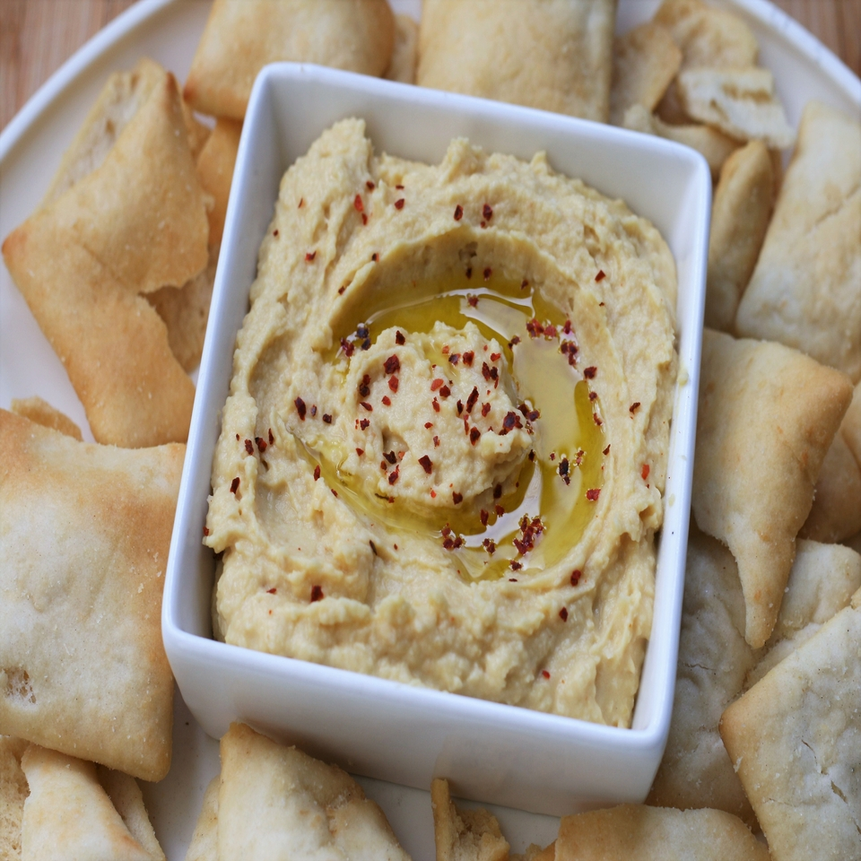

Back to home
Tahiniless Hummus

Description
Tahini is $15 a jar here but we love hummus so I often make it without the
tahini.
Ingredients
- 2 (15 ounce) cans garbanzo beans, drained and liquid reserved
- 6 tablespoons olive oil
- 5 tablespoons lemon juice
- 3 cloves garlic
- 1 teaspoon salt
- 1 teaspoon ground coriander
- ⅛ teaspoon ground cumin
- ⅛ teaspoon cayenne pepper
Steps
-
Combine garbanzo beans, olive oil, lemon juice, garlic, salt, coriander,
cumin, and cayenne in a food processor. Add 4 tablespoons reserved bean
liquid and process until hummus is smooth.